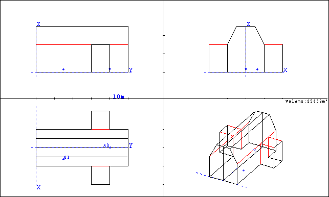
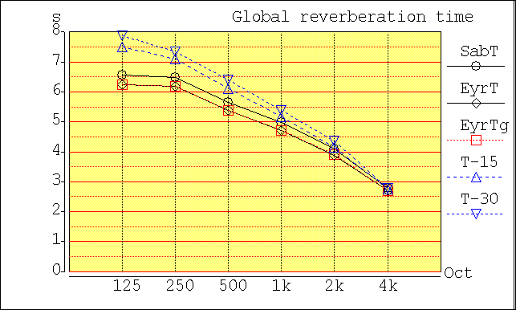
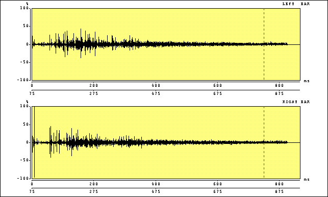

Cathedral Description
A cathedral is a room designed for housing a large number of people for religous worship. Cathedrals typically have very high ceilings which result in extremely high room volumes for a given floor area. When this large volume is combined with the fact that most cathedrals have very hard surfaces such as wood, stone, and concrete, most cathedrals have very long reverberation times. The long reverberation times are utilized by composers of organ, choir, and chant to enhance the experience. In particular, composers can utilize the reverberation to act as additional instrument with organists, singers, or chanters doubling and tripling particular notes to create new harmonic sequences.For these simulations a cathedral with a classic with basic nave dimensions of 50 m x 20 m x 25 m high with transcepts extending another 10 m from the nave at a height of 15 m as shown in the figure below

Reverberation Time
The reverberation time (RT) in each of the six octave bands from 125 Hz to 4 kHz. The estimated RT computed using the Sabine equation (circles) and Eyring equation (diamonds) equations is plotted along with the estimated reverberation time computed using ray tracing from 4*T-15 and 2*T-30 (up and down triangles). T-15 is the computed time for the sound energy level to drop by 15 dB from th einitial energy level and T-30 is the time for the sound energy level to drop from -5 dB to -35 dB from the initial energy level.
As one can see, the low frequency reverberation time exceeds 7 seconds, dropping at higher frequencies because of absorption of the pews and the air itself.

Absorption
The absorption coefficients for the ceiling, wall, floor, panel, and chalkboards are shown in the table below. Data were taken from several well known texts including Beranek's "Concert and Opera Halls" and Mehta's "Architectural Acoustics"
| Absorption Coefficient | ||||||
| Material | 125 Hz | 250 Hz | 500 Hz | 1 kHz | 2 kHz | 4 kHz |
| Brick (walls) | 0.02 | 0.02 | 0.02 | 0.03 | 0.04 | 0.05 |
| Plaster (walls/ceiling) | 0.12 | 0.10 | 0.08 | 0.06 | 0.06 | 0.06 |
| Hard Pews (70% of floor) | 0.28 | 0.30 | 0.38 | 0.43 | 0.45 | 0.43 |
Impulse Response
The impulse response for the room as computed by CATT is shown in the figure below. Notice that even this room does not have a perfect impulse for an impulse response. The small amount of reflection gives rise to a minor tail on the impulse respone.


|
These animations, auralizations, and visualizations are © 2006 by
Ralph T. Muehleisen and are licenced under a
Creative Commons Attribution-NonCommercial 2.5 License.
|